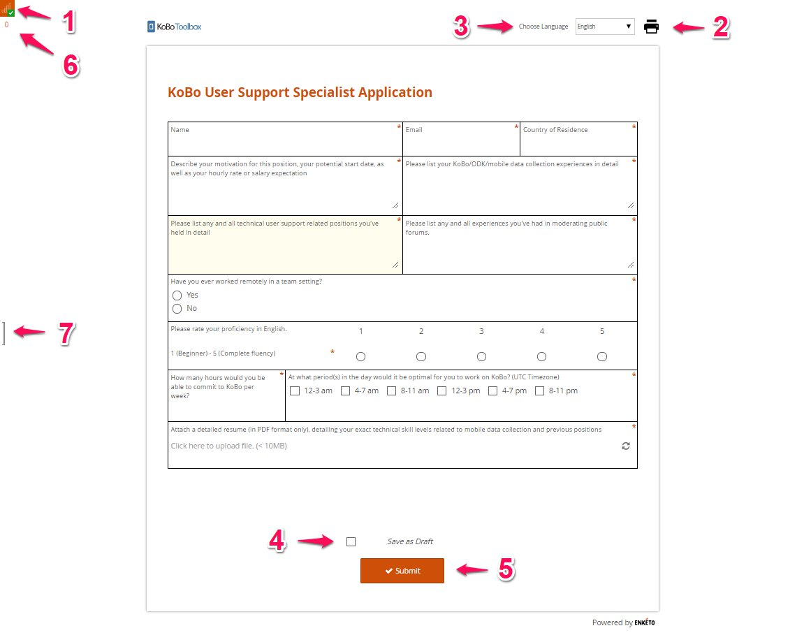

What do you need help with?
Search the knowledge base, browse our resources, and visit our forum for more detailed information
Search the knowledge base, browse our resources, and visit our forum for more detailed information
Last updated: 15 Feb 2022
Enketo web forms are used by KoboToolbox to preview your forms and to enter data directly on your computer. You can also use web forms for collecting data on your mobile devices - even if you’re offline at the time of data collection. It works on virtually any device, including iPhones, iPads, or any other smartphone, tablet, or computer. Some features are still being actively developed for Enketo, so some special questions may not be fully supported yet on every device.
You’ll always use Enketo web forms if you’re not using the KoboCollect app on an Android device for data collection. However, there are also some appearance settings viz. likert for select one question type, multiline for text question type etc. and style settings for KoboToolbox’s Layout & Settings which best works on web forms when compared to the KoboCollect app.
To start collecting data, you will need to deploy your project first. Once your project is deployed you will see a screen as shown below with options on how to Collect data.

In the drop down menu under Collect data, you have several options available for Web Forms:
Online-Offline (multiple submission): This allows online and offline submissions and is the best option for collecting data in the field.
Online-Only (multiple submissions): This is the best option when entering many records at once on a computer, e.g. for transcribing paper records.
Online-Only (single submission): This allows a single submission and can be paired with the ‘return_url’ parameter (explained below) to redirect the user to a URL of your choice after the form has been submitted.
Online-only (once per respondent): This allows your web form only to be submitted once per user, using basic protection to prevent the same user (on the same browser & device) from submitting more than once.
Embeddable web form code: Use this html5 code snippet to integrate your form on your own website using smaller margins.
View only: Use this version for testing, getting feedback. Does not allow submitting data.
Android application: Use this option to collect data in the field with your Android device.
Select an appropriate drop down option from Collect data and then press COPY to copy the survey link to share with others or press OPEN to open the survey form to a new tab in your browser. Once the form is opened, you should see a screen like the one shown in the image below:

1. Signal Bars: The signal bars indicate whether the form can be launched offline or not. Web forms are built to be able to collect data while you are offline, however, it is essential to visit the form URL with an internet connection before going offline. Once your form has been loaded and cached, you’ll see the offline availability icon (empty “signal bars” and a check mark) in the top-left corner indicating that you can now access the form offline.
2. Printer Icon: The printer icon provides you access to print your form or save it as a PDF version. For this, press the printer icon and then select Destination (an appropriate printer connected to your device to print out your survey form or Save as PDF to save your survey form as a PDF).
3. Choose Language: This feature in the web form gets activated if you have multiple languages for your survey project. You’re able to toggle between the default language and other languages present in your survey form.
4. Save as Draft: Use this feature to edit or update your records before submitting it to the KoboToolbox server. Once you have checked Save as Draft you will have an option to Save Draft. The draft record gets queued but does not sync with KoboToolbox server. To sync it with the server you will have to open the record from the queued list and uncheck Save as Draft and press Submit.
5. Submit: Press the Submit button if you have completed collecting information and wish to send the filled-up form to the KoboToolbox server. After pressing the Submit button, you will not have an option to edit the records on your device.
6. Queued Records Counter: The Queued Records Counter shows you the total number of records submitted and waiting to be uploaded to a server. The queued records are uploaded automatically in the background every 5 minutes when the web page is open and an internet connection is available.
7. Queue Records Pane: Clicking the side button shows you the records that are available as drafts (which can still be edited) and finalized submitted records queued to be either uploaded to your server with an internet connection or exported as zip file as outlined in the support article here.
Follow the steps outlined below to save a form and collect data in a web form using a a mobile device:
Connect your device to the internet.
Open a web browser available (Chrome preferred) on your mobile device.
Type or paste the URL of your web form to open a form page that resembles the one shown below:

Click the 3 DOTS icon at the top right (circled in the image above) and select ADD TO HOME SCREEN to create a shortcut to your device.
A window will appear to type a name for your project shortcut. Name the shortcut and then press ADD.
You will now see a KoboToolbox web form shortcut icon on your device, similar to the what is shown below:

Select the shortcut icon to start collecting data for your survey project.
By default the form refreshes for the next entry once the data has been
submitted. If users are only supposed to enter one entry (e.g. in an online
survey) you can send them to another website upon submission. To use this
feature you need to 1) use the Online-Only form of the form, and 2) add
return_url=https://www.somewebsite.com to your URL.
Always use the latest version of the browser. We recommend users to use Chrome as their browser while working with web forms. For other details on troubleshooting web forms, please visit our support article (Troubleshooting Enketo Web Forms) here.
Did you find what you were looking for? Was the information clear? Was anything missing?
Share your feedback to help us improve this article!